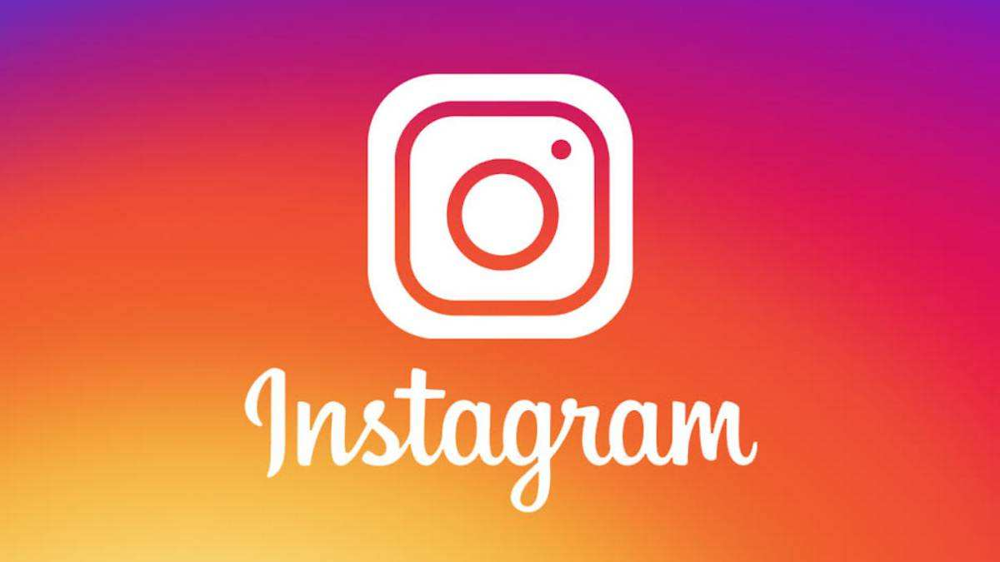
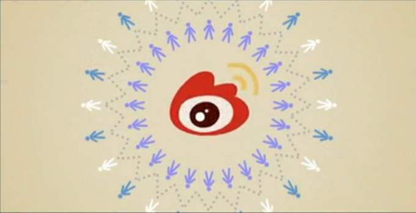

-
Facebook By Baidu,Link
Facebook（中文译为脸书或者脸谱网 [1] ）是美国的一个社交网络服务网站 ，创立于2004年2月4日，总部位于美国加利福尼亚州门洛帕克。2012年3月6日发布Windows版桌面聊天软件Facebook Messenger [2] 。主要创始人马克·扎克伯格（Mark Zuckerberg）。
-
Instagram By Baidu,Link
Instagram是一款支持iOS、Windows Phone、Android平台的移动应用，允许用户在任何环境下抓拍下自己的生活记忆，选择图片的滤镜样式，一键分享至Instagram、Facebook、Twitter、Flickr、Tumblr、foursquare或者新浪微博平台上。不仅仅是拍照，作为一款轻量级但十分有趣的App，Instagram 在移动端融入了很多社会化元素，包括好友关系的建立、回复、分享和收藏等，这是Instagram 作为服务存在而非应用存在最大的价值。
-
twitter By Baidu,Link
Twitter（通称推特）是一家美国社交网络及微博客服务的网站，是全球互联网上访问量最大的十个网站之一。是微博客的典型应用。它可以让用户更新不超过140个字符的消息，这些消息也被称作“推文（Tweet）”。这个服务是由杰克·多西在2006年3月创办并在当年7月启动的。Twitter在全世界都非常流行， 据Twitter现任CEO迪克·科斯特洛宣布，截至2012年3月，Twitter共有1.4亿活跃用户，Twitter被形容为“互联网的短信服务”。
-
weibo By Baidu,Link
微博（Weibo）是指一种基于用户关系信息分享、传播以及获取的通过关注机制分享简短实时信息的广播式的社交媒体、网络平台，用户可以通过PC、手机等多种移动终端接入，以文字、图片、视频等多媒体形式，实现信息的即时分享、传播互动。